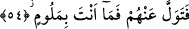

birbirlerine uzak olması ve aynı zamanda birbirleriyle görüşüp bunları tavsiye
etmelerinin mümkün olmaması hasebiyle onların olsa olsa şer çemberi içinde ittifak
ettiklerini, bunun da tavsiyeleşmekten daha çirkin ve alçak olan tuğyân/Hakk’a karşı
azgınlıktan ibaret olduğunu belirtmek için getirilmiştir. Hepsini içine alan bu tuğyan;
onların bu sözleri, kendi tabîatları iktizâsı olmaksızın öncekilerin tavsiyesi gereği
sarfetmediklerini bildirmekte, ancak kendi çirkin karekterleri neticesinde onların her
birinden bu alçak sözlerin çıkmış olduğuna işâret etmektedir.
Bu âyet, evvelki ve sonraki azgın nefis sâhiplerinin her ikisinin karekterlerinde de
şeytanın azgınlık, karşı çıkış ve kibir tabîatının mündemic olduğunu göstermektedir.
Onlara zâhirde herhangi bir peygamber veya bâtında Rabbânî ilhamlardan biri geldiği
zaman hemen onu inkâr ederek: “Bu bir büyücüdür, bizi büyülemek istiyor veya bu,
sözüne kulak verilemeyecek bir delidir” gibi sözleri ile sanki azgınlık ve inkârda
birbirleriyle sözleşmiş gibi aynı şekilde hareket ediyorlar. Çünkü onlar aynı karekterde
yaratılmışlardır. Hattâ onlar tuğyan sebepleri olan rahatlık, refah, şımarıklık ve
zenginliğe sâhip bulunup Allah’a karşı azmış azgınlar gürûhudur. Şâir şöyle der:
Gençlik, boş zaman ve zenginlik insanın helâk sebebidir.
Bu azgınlar gürûhu da şairin dediği gibi gençliklerinin aleyhine hareket ettiler. Oysa
ömürlerini, gençlik ve zenginliklerini Matlûb-i Hakîki olan Allah’ı elde etme yolunda
harcamaları gerekirdi.
Hâfız’ın dediği gibi:
Aşk, gençlik ve kalenderliği bir arada toplamak,
Ne güzeldir, sonra ince mânâlardan dem vurmak.
54. Artık onlara aldırma. (Dâvete uymamalarından dolayı) sen kınanacak değilsin.
“Artık onlara aldırma.” Onlarla, söz mücâdelesi yapmaktan yüz çevir. Çünkü sen
defalarca bunu yapmıştın, ama reddedip kibir göstermişlerdi. Onlarla savaşman
emredileceği vakte kadar onların mükâfâtından yüz çevir.
Fethu’r-Rahman’da bu âyet, “onlar üzerine aşırı bir hırsla gitmekten ve onların
müslüman olma özlemleriyle kendini yiyip bitirmekten vazgeç” şeklinde tefsir
edilmiştir. Vâsıtî de bu âyetin: “Onları ezelde takdir olundukları saâdet ve şakâvet
üzerine bırak!” şeklinde bir anlam ifâde ettiğini söylemiştir.
“Sen” bütün gayretini sarfedip yapılması gereken herşeyi yaptıktan sonra onlardan
yüzçevirmen sebebiyle “kınanacak değilsin.” “Levm” ve “melâmet” kelimeleri
azarlamak, paylamak, tekdir etmek, zemmetmek, kınamak, serzenişte bulunmak gibi
anlamlara gelir.